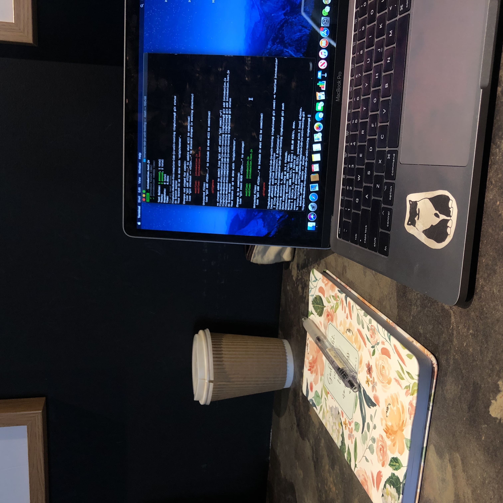

Become a Tutor Today!

Is there a subject that you're good at? Perfect! Register as a tutor now so you can help others and get paid.
Our product, called “A++ Learning”, will be a local and university-based tutoring system where students can find specialized tutors. We will provide connections between students and local tutors that are willing to work together in order to get the help the student needs. Giving a wide range of people offers easier access to find the right tutor for students’ specific university classes that fits their needs.
Is there a subject that you're good at? Perfect! Register as a tutor now so you can help others and get paid.
Need help with your classes? Register as a student and find a tutor who goes to the same school with you.
I am a second year Computer Engineering major. I am passionate about this project because often times I find myself in a class where I could use some help but never really know what to do about it.
I’m a 2nd-year Computer Engineering Major. I have always been a very introverted person which made going out and finding my own services mentally strenuous and usually not a first or even second option. I would have loved an easy-to-use platform to allow me to book tutoring appointments from the safety of my space.
I'm a 2nd year Computer Engineering Major. Personally, I had run into many situations where I forgot to book an appointment and ends up not able to get help. If there’s a tool that offers me more tutoring options, it could be very useful when I need urgent help.
I’m a 2nd-year Computer Science major. When I need to solve a problem in a short time, I notice that it’s really hard to get a reply from tutors, or sometimes it just took too long. So I really wish if there has a website runs like a real-time Chegg which you can instantly get the response from the tutor for help.
I’m a 3-rd year Computer Science Major. I usually do my homework at night, and it’s always hard to find my professor or TAs or any other campus resources to help me, which makes me realize many college students need more convenient tutoring at any time.